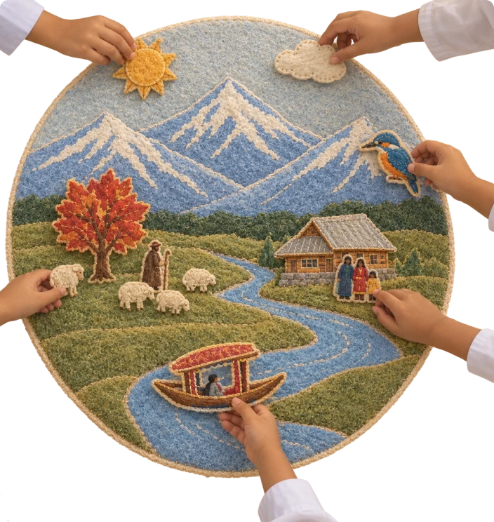
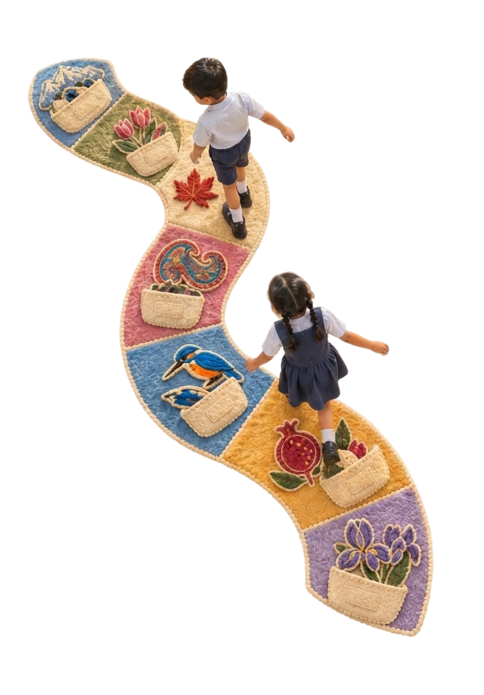

Design Days ’26 · Relationship Design Challenge · Living Heritage
Presenting
Namda
Baithak
A hand-felted story circle that brings Kashmir’s Namda back to the floor, and into everyday life.
What:
A modular felt story mat. One disc and ten detachable sections, each with a raised Kashmiri motif and a pocket of story pieces.
For:
Classrooms, anganwadis and libraries.
Set:
About 2 m across. ₹15,000–20,000, around ₹1,500–2,000 per child.
Made by:
Kashmiri artisans. A team of four, about two weeks.
Maker’s tag:
Every mat carries the artisan’s name and voice.
SeatingFLOOReveryone sits at one level


With love,
Nivedita M R